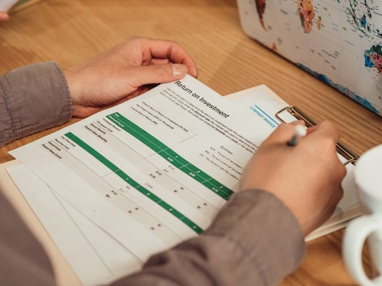

Investir com pouco: Tesouro Direto e CDB para quem está começando
Dois caminhos simples e de baixo risco para o dinheiro que hoje dorme parado na conta.

Existe uma ideia teimosa de que investir é coisa de gente com muito dinheiro, planilha complicada e estômago para montanha-russa. Para quem está começando, essa história atrapalha mais do que ajuda: enquanto a dúvida trava, o dinheiro fica parado na conta corrente perdendo valor caladinho para a inflação. A boa notícia é que os dois pontos de partida mais conhecidos da renda fixa brasileira — o Tesouro Direto e o CDB — foram feitos exatamente para quem tem pouco e quer começar com calma.
Neste guia vamos explicar, em linguagem simples, como cada um funciona, o que é liquidez e imposto sem virar aula de economia, e por que aportar pouco e sempre costuma render mais tranquilidade do que qualquer jogada de sorte. Antes de tudo, um combinado honesto: isto é conteúdo educativo, não recomendação. A intenção é te dar vocabulário e critério para conversar com o seu banco ou corretora — a decisão final é sempre sua.
Antes de investir, o degrau anterior
Investir faz mais sentido depois que existe um colchão para imprevistos. Se você ainda não tem, vale começar pela reserva de emergência — ela é a base que impede que um susto vire uma dívida.
O que é renda fixa (sem economês)
Renda fixa é o apelido para investimentos em que você, na prática, empresta dinheiro a alguém — ao governo, a um banco — e recebe de volta com uma remuneração combinada. "Fixa" não quer dizer que o valor nunca oscila; quer dizer que a regra de remuneração é definida na largada. Você sabe se o rendimento vai acompanhar a taxa básica, a inflação ou uma taxa fechada. É o oposto de comprar uma ação, em que você vira sócio e o resultado depende do sobe e desce do mercado.
Dentro desse universo, três referências aparecem o tempo todo: a Selic (a taxa básica de juros da economia), o CDI (uma taxa muito próxima da Selic, usada como régua para produtos de banco) e o IPCA (o índice oficial de inflação). Guardar esses três nomes já resolve metade do jargão.
Tesouro Direto: emprestando para o governo
O Tesouro Direto é um programa que permite comprar títulos públicos pela internet, com valores acessíveis — dá para começar com pouco, às vezes com algumas dezenas de reais. Na prática, você empresta para o Tesouro Nacional e recebe de volta no vencimento, com a remuneração definida pelo tipo de título escolhido. Existem três famílias principais, e a diferença entre elas é justamente como o dinheiro rende:
- Tesouro Selic (pós-fixado): acompanha a taxa básica de juros. Costuma ser o mais estável no dia a dia e o mais lembrado por quem quer algo parecido com "guardar dinheiro rendendo". É frequentemente citado como opção para reserva justamente pela oscilação baixa.
- Tesouro IPCA+ (híbrido): paga a inflação do período mais uma taxa fixa por cima. A ideia é proteger o poder de compra ao longo do tempo — costuma ser associado a objetivos de prazo mais longo.
- Tesouro Prefixado: você já sabe na compra a taxa anual que vai receber se levar até o vencimento. Dá previsibilidade, mas o valor no meio do caminho pode variar bastante se você precisar vender antes.
A regra de ouro dos títulos: a taxa combinada vale se você levar até o vencimento. Vender no meio do caminho significa aceitar o preço do dia — que pode estar acima ou abaixo do que você imaginava.
Se a palavra "pós-fixado" ou "vencimento" ainda soa estranha, vale abrir o nosso glossário em outra aba — ele destrincha termos como renda fixa, liquidez e CDI em poucas linhas.
CDB: emprestando para o banco
CDB é a sigla de Certificado de Depósito Bancário. A lógica é gêmea à do Tesouro, só que agora quem pega o dinheiro emprestado é o banco, não o governo. Em troca, o banco te paga uma remuneração — muitas vezes expressa como um percentual do CDI (por exemplo, "tantos por cento do CDI"). Quanto maior o percentual e o prazo, em geral maior tende a ser o rendimento oferecido.
O ponto que mais tranquiliza iniciantes é a proteção do FGC, o Fundo Garantidor de Créditos. Trata-se de um mecanismo do próprio sistema financeiro que, em caso de quebra da instituição, cobre valores até certos limites por CPF e por instituição, respeitando também um teto global que se renova ao longo dos anos. Não é uma garantia infinita nem automática para qualquer quantia: é uma rede de segurança dentro de limites. Por isso, muita gente distribui aplicações entre instituições em vez de concentrar tudo em uma só. Vale conferir as regras vigentes do FGC antes de decidir.
FGC não é bala de prata
A cobertura existe, mas tem tetos por CPF, por instituição e um limite global. Rentabilidade muito acima da média costuma vir acompanhada de mais risco — desconfie de promessas fáceis e leia as condições.
Liquidez e imposto: o que muda entre eles
Liquidez é a facilidade de transformar o investimento em dinheiro na conta. Alguns títulos e CDBs têm liquidez diária (você resgata e recebe rápido); outros só liberam no vencimento, ou pagam menos se você sair antes. Para dinheiro que pode ser preciso a qualquer momento, liquidez alta importa mais do que um décimo a mais de rendimento.
Sobre imposto, sem entrar em números específicos: tanto o Tesouro Direto quanto os CDBs mais comuns seguem uma tabela de Imposto de Renda que costuma ser regressiva no tempo — ou seja, quanto mais tempo o dinheiro fica aplicado, menor tende a ser a alíquota sobre o rendimento. Isso é mais um motivo para pensar em prazo. As regras podem mudar e há exceções, então confirme sempre as condições vigentes na hora de aplicar. Se essa temporada de declaração te dá arrepio, o texto Imposto de Renda 2026 sem estresse ajuda a organizar os documentos com calma.
Comparativo geral: Tesouro, CDB e Poupança
A tabela abaixo resume características gerais para orientar o estudo — não é promessa de rendimento nem indicação de qual escolher. O comportamento real depende do título específico, do momento da economia e das condições de cada instituição.
| Característica | Tesouro Direto | CDB | Poupança |
|---|---|---|---|
| Você empresta para | Governo (Tesouro Nacional) | Banco | Banco |
| Remuneração ligada a | Selic, IPCA ou taxa fixa | Geralmente CDI | Regra própria (fórmula fixa) |
| Proteção principal | Título público federal | FGC (dentro de limites) | FGC (dentro de limites) |
| Liquidez | Varia por título | Varia por produto | Alta, com aniversário mensal |
| Imposto de Renda | Tabela regressiva | Tabela regressiva | Isenta |
| Valor para começar | Baixo | Baixo a médio | Muito baixo |
A poupança entra como referência porque é o que quase todo mundo já conhece. Ela é simples e isenta de IR, mas sua regra de rendimento é fixa e frequentemente comparada de forma desfavorável a outras opções de baixo risco. Conhecer as alternativas não é abandonar a poupança de qualquer jeito — é ter critério para escolher.
Aportar pouco e sempre: a parte que funciona de verdade
Se existe um "segredo" acessível para quem começa, é a constância. Colocar um valor pequeno todo mês, de forma automática, costuma superar a estratégia de esperar "sobrar" para aplicar — porque quase nunca sobra. Aportes regulares criam o hábito, diluem os altos e baixos e, com o tempo, deixam os juros trabalharem sobre uma base que só cresce.
- Defina um valor confortável. Melhor um aporte pequeno que você mantém do que um grande que você abandona no segundo mês.
- Automatize. Programe o aporte para logo depois do dia do salário, antes que o dinheiro encontre outro destino.
- Separe por objetivo. Reserva, viagem, entrada de um bem — cada meta pode ter o produto e o prazo que combinam com ela.
- Revise sem obsessão. Olhar de vez em quando basta; acompanhar de minuto em minuto só gera ansiedade.
Esse raciocínio conversa direto com o orçamento. Se você ainda está ajustando quanto dá para guardar, o método do orçamento sem culpa ajuda a enxergar a fatia que pode virar aporte sem apertar o mês.
Organize o dinheiro antes de investir
O app Bússola Leve ajuda a enxergar quanto sobra por mês e a separar cada objetivo — o passo que transforma "quero investir" em "estou investindo um pouco todo mês".
Conhecer a Bússola LeveErros comuns de quem está começando
Correr atrás do maior rendimento
Promessas de retorno muito acima do comum quase sempre escondem mais risco, menos liquidez ou letra miúda. Baixo risco combina com expectativas realistas.
Investir o dinheiro que pode faltar amanhã
Aplicar sem reserva é convite para resgatar na pior hora. Primeiro o colchão, depois os objetivos de prazo mais longo.
Ignorar o contexto da economia
Quando a taxa básica muda, os rendimentos da renda fixa mudam junto. Entender esse elo — assunto do texto Selic e seu bolso — evita surpresas e decisões no susto.
Conclusão: comece pequeno, comece hoje
Tesouro Direto e CDB não são atalhos para ficar rico — são ferramentas para que o seu dinheiro pare de encolher parado e comece a trabalhar dentro de um risco que você entende. O mais importante não é acertar o título perfeito na primeira tentativa, e sim dar o primeiro passo: estudar o vocabulário, separar um valor confortável e manter a constância. Com o tempo, o hábito ensina mais do que qualquer palpite.
Continue no seu ritmo, tire dúvidas no nosso glossário sempre que um termo travar, e lembre-se de que informação boa serve para você decidir com calma — nunca para te empurrar a lugar nenhum.
Aviso importante: este conteúdo é exclusivamente educativo e informativo. Não constitui recomendação de investimento, oferta de produto financeiro nem consultoria individual. Rentabilidade passada não garante resultados futuros, e todo investimento envolve algum grau de risco. Regras de tributação, limites do FGC e condições de cada produto podem mudar — confirme sempre as informações vigentes e, se precisar, procure um profissional habilitado antes de decidir.